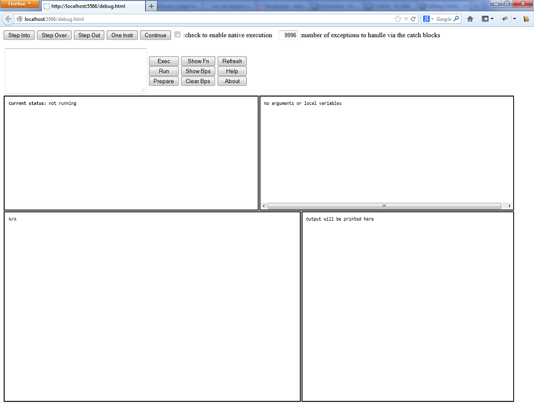
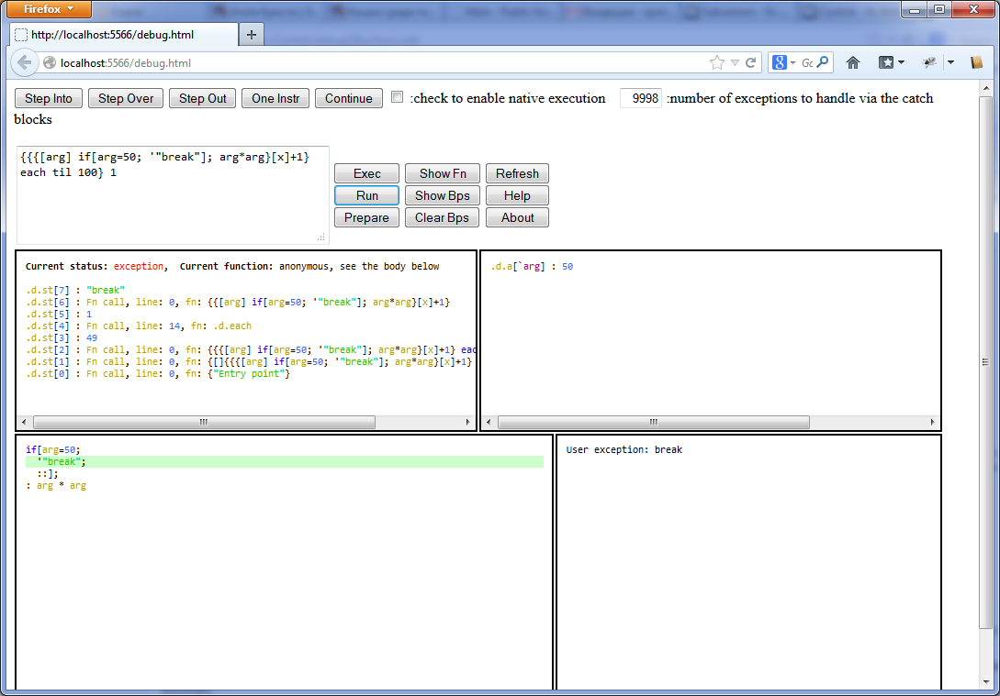

Contrib/debugQ
Contents |
Q Debugger
debug.q is a Q interpreter in Q. It executes bytecode instruction by instruction and has full control over program flow. It can stop at any instruction, on exceptions and even breakpoints.
Basically any valid Q program can be executed by it - it supports all Q structures, functions, adverbs, exception handling blocks, QSQL and etc.
Limitations are: it can't enter QSQL statements so functions used in "select" for example can't be debugged (you may call the debugger from inside such a function though). Also it will not follow "value" and similar functions that may parse and execute some instructions. It has a state so it obviously can't be used with peach and with read only threads.
Note that the debugger doesn't affect the Q environment in any way except its own .d namespace. You may call its functions from other functions, call any other function during the debugging, restart the debugging at any point and etc.
The debugger doesn't use the original source code to show its progress. Instead it recreates the source code from the bytecode, sometimes the result may look strange (all selects will look like functional selects for example) but this should not be a problem.
Adverbs are realized as functions so you will be able to enter them. By default the debugger doesn't stop in adverbs, if you finish one "each" iteration for example you will be immediately transfered to the start of the same function. The number of remaining iterations can be seen on the top of the stack.
Debugger doesn't enter functions from some namespaces - .q and .h. Also some debugger functions are skipped. K functions are not a problem though because they have the same format as Q functions. You may even use the debugger to Q-fy K functions because it will show how they would look in Q.
Usage
To start the debugger you should first load debug.q file. Then you have two options - you may either run a function until it finishes, fails or reaches a breakpoint or you may initialize the debugger and then use step functions:
.d.r[{x*y};(10;20)]
.d.r[{x*20};10]
.d.i[{x*y};(10;20)]
.d.r will run a function and .d.i will init the debugger with the function. Args should be in the format suitable for "." function. If you call a monad with an atom then you may drop enlist.
Step functions and .d.r will always print the state of the debugger if the function is not finished:
q).d.r[{x*y; x*`l};(10;20)]
Exception: Binary * has failed with args (`l;10): type
Top of the stack:
.d.st[0]: Fn call, line: 0: : "Entry point"
.d.st[1]: `l
.d.st[2]: 10
Current line: 1: : x * `l
First the reason why the debugger has stopped is printed. Here it is an exception. Then the top 10 entries of the stack are printed. Note that you are free to modify it to remove the cause of the exception. Finally the current line is printed.
If you wonder where in the function you are you may print it with .d.f:
.d.f[] 0: x * y; 1: : x * `l
As you can see the representation of the function differs from the original one. The debugger breaks functions at important points like ";" to make the debugging easier. Now you may modify the stack and continue the execution:
q).d.st[1]:20 q).d.cont[] 200
While you are in the debugging mode you can use the following functions to execute the pieces of code:
.d.cont[] - continue execution .d.next[] - next line inside the current function (doesn't enter functions) .d.ef[] - finish the current function .d.l[] - next line (enters functions) .d.s[] - next instruction
.d.s executes the code by 1 bytecode at a time, you can use it to understand what happens inside some line of code. .d.l and .d.next can be used to move to the next line of code (.d.l will enter the func calls and .d.next will not). .d.ef will work until the current function is finished, if you use it inside an adverb it may look like nothing has happened (but really you are at the next item!). .d.cont will work until the end, it will break only on a breakpoint or an exception.
Now to the breakpoints. The debugger is an interpreter so it can stop at any point you like. Suppose you have this function:
f:{x*y; x+y; x-y; x%y}
and you want to stop at the third expression. First you need to print this function to see the line number of this expression using .d.pf:
q)f:{x*y; x+y; x-y; x%y}
q).d.pf f
0: x * y;
1: x+y;
2: x-y;
3: : x % y
The line number is 2. Now you may add a breakpoint using .d.ba:
q).d.ba[f;2] q).d.pf[f] 0: x * y; 1: x+y; 2:* x-y; 3: : x % y
Note that breakpoints are marked with * in the .d.pf output. Now you may run this function:
q).d.r[f;(10;20)] Breakpoint Top of the stack: .d.st[0]: Fn call, line: 0: : "Entry point" Current line: 2: x-y;
The debugger has stopped at the breakpoint. Now you may use step functions to move in code.
All other breakpoint related functions:
.d.pf[func] - shows the function with the breakpoint line numbers, bps are marked with * .d.ba[`;line numbers] - add breakpoints to lines in the current function .d.ba[func;line numbers] - add breakpoints to lines in the function .d.bd[func;line numbers] - delete breakpoints from lines in the function .d.bs[func;line numbers] - set breakpoints in the function to these lines .d.bc[] - clear all breakpoints
The last useful function is .d.h[] - it will print a short help on all other functions.
Tuning
The debugger has some important parameters that can affect it.
.d.e - is the number of exceptions the debugger will handle silently. Sometime Q catch blocks do not allow you to see the real cause of the problem, in this case you may set .d.e to 0 and the debugger will stop on the first exception ignoring the catch blocks. You may then set it to 1 and use .d.cont to continue the execution. Also you can set .d.e to whatever you want - the debugger decrements it on each exception.
.d.timeout - 5 minutes by default. The debugger will stop after 5 minutes whatever it is doing. Thus you are guaranteed that it will not hang forever. This is especially useful when you debug remotely. You may use .d.cont to continue, timeout doesn't break the debugger's state.
.d.noadv - 1b by default. The debugger will skip the internals of all adverbs though it still may stop inside them on exceptions or breakpoints. This option allows you to not debug the debugger functions.
.d.na - 0b by default. If this option is 1b the debugger will execute all functions natively outside the debugger. You may use this val to walk over functions that take too much time if executed in the debugger. That is: set .d.na to 1b, step over some function, set it to 0b again.
Remote debugging
All step functions support the remote debugging. Connect to the remote process and execute the commands as usual. They will return either the final result or a string with the debugger state.
Another option - use some frontend to debug.q. Currently there are two options - WEB 2.0 based debug.html and QPad editor (www.qinsightpad.com).
WEB front end to debug.q
Step functions provide very little information about the environment, also it is difficult to navigate the call stack and inspect variables. The raw debugger functions are very useful when you want to quickly determine the cause of some exception, when you want to understand some complicated piece of code you may try to use debug.html.
debug.html provides the complete WEB interface to debug.q with many useful features. It uses AJAX requests to retrieve data so it looks like a WEB App.
To use it you need to put the following files in the .h.HOME directory (or point this variable to this directory):
debug.html - the main file jquery-1.5.1.min.js - JQuery jquery.blockUI.js - JQuery lib qparse.q - optional, it is used to colorize Q-html.
Then of course debug.q should be loaded.
Important: debug.html relies on the default .z.ph behavior. It should be possible to do 3 things: 1) load html and js files 2) execute the init function .d.html via a web request 3) execute ping calls "1" on each debug request. Ping calls allow you to refuse the service if you have some access rights management functions.
Debug.html will substitute .z.ph with its own function and call the old .z.ph on all debugger unrelated requests so it will not disrupt the ordinary requests from other users.
Debug.html should work in the latest IE and Firefox, other browsers were not tested. It is unlikely though that there will be major problems as JQuery is used for most tasks.
Suppose we are already in the directory with debug.html files then:
q)\l debug.q q).h.HOME:"./" q)\p 5566
It is not necessary to set the port if it is already set. Now in the browser:
http:/localhost:5566/debug.html
You should see the following picture: 
To start the debugging enter an expression into the text field and press Run or Prepare. This buttons correspond to .d.r and .d.i functions. Note that the text field supports selection. You may apply run or prepare only to the selected expression. Also you may use Exec button to execute arbitrary piece of code natively. The result will be printed into Output window.
As an example enter this function and press run:
{{{[arg] if[arg=50; '"break"]; x*x}[x]+1} each til 100} 1
The debugger will stop on the exception and you'll see this: 
There are 4 windows. The top-left is Stack window. The cause of the break is printed there, the name of the current function and the top stack entries. You can check any function in the stack by double clicking on it. The function will be printed in Code window and its arguments will be printed in Variables window.
Try to double click on .d.each function entry. You'll see the func body and all current parameters and local variables.
Variables window is on top-right. It contains all local variables and arguments of the current function. If you use step buttons changed variables will be highlighted.
Code window is bottom-left. It is very interactive. You may click on anything in it and it will be printed in Output window. If you are still in .d.each function try to click on "r", its content will be printed. Try to click on .d.each itself, the function's body also will be printed.
If you double click some line in Code window you will set or remove a breakpoint. Try to double click on some "if" in .d.each function.
As you can see there are two colored lines now. The green one is the current line, the red one is the breakpoint.
Now press Refresh button and the state of all windows (except Output) will be restored. You may press Refresh anytime to refresh the state.
Press Show Bps to see all breakpoints. You will see the breakpoint in .d.each function. Now you may click on it and the function will be printed in Code window. You may delete this breakpoint if you want. But better press Run again. This time you will be stopped on the breakpoint in .d.each. Double click on the green line to remove the breakpoint (red has lower priority than green) and press Continue. You'll stop on the exception again.
You may click on anything in Output window as well. Click on "arg" in Code window, it will be printed in Output window (50). Click on 50 and it will be evaluated and printed back.
Finally press Help button. You'll see the short help on all buttons and windows.
Note that the debug screen will be blocked during the execution of the debug functions.
Note that sometimes large tables are abbreviated and a short notice is printed below. If you click on this notice you'll see the table in a bigger window.